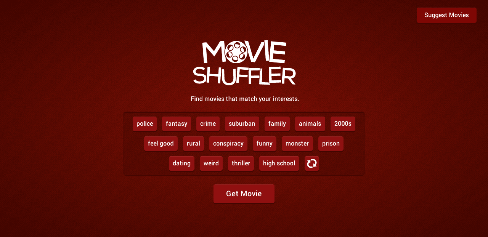

Movie Shuffler
-
Live Site
View Code

Movie Shuffler is a web application that returns movie recommendations based on selected content keywords. PHP and MySQL powers the server side of the site. The site's views are dynamically generated with JavaScript and animated with CSS. To simplify user submissions, APIs from both YouTube and Rotten Tomatoes were used. The site is fully responsive and works well on mobile devices.